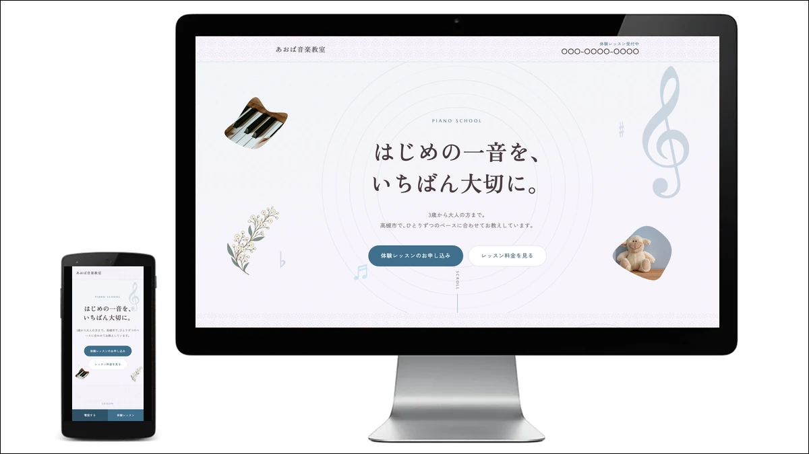

WORKS
ピアノ教室サイト（デモ）
教室サイト／自主制作

ピアノ教室サイト（デモ）を自主制作しました。教室ごとの情報を差し替えて、同じ作りで複数の教室サイトを作れるように設計しました。デモの「あおば音楽教室」は架空の教室で、実在の教室ではありません。
教室ごとの情報を差し替えて使える仕組みと、料金や問い合わせ先が分かりやすい見せ方を考えました。
こんな方に近い制作です
- ピアノ教室の内容や料金を分かりやすく伝えたい方
- 電話やメールなど、教室に合った連絡先を案内したい方
POINT 制作のポイント
-
1
JSが動かなくても、内容が見えるようにする
JavaScriptが読み込めなくても、本文や写真が見え、レイアウトが変わらない作りにしました。
CSSで先に内容を隠さず、動きに必要な処理はJavaScript側にまとめています。
-
2
差し替える情報を、ひとつにまとめる
教室名や紹介文、料金、連絡先など、教室ごとに差し替える項目をTSV（タブ区切りの表）の1行に集約しました。
Pythonのビルドスクリプトで、その1行から教室ごとのサイトを生成する設計です。
-
3
未確認の情報は載せない
教室概要や数字などの項目は、空欄なら要素ごと消す仕組みにしました。
LINE・InstagramのURLも、空欄ならボタンごと非表示にしています。リンク先のないボタンを残しません。
-
4
料金と連絡先を、見つけやすくする
料金を大きく見せ、レッスンを検討する方が見つけやすいようにしました。
連絡・教室の様子を見る入口として、TEL・MAIL・LINE・Instagramの4種類を用意しています。架空の教室のデモでは、LINE・Instagramは設定せず非表示にしています。
CONTACT 同じような制作のご相談
教室のサイトは、レッスン内容や料金、連絡先を分かりやすく伝えることが大切です。掲載する情報の整理から、一緒に考えます。
＼ ご相談・お見積り・現状の診断は無料 ／